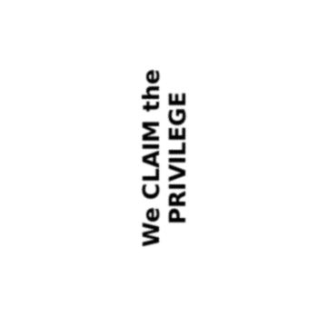
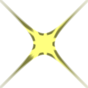

4.10 Spatial Transformations
This section gives the API for applying spatial transforms to a flomap, such as rotations, warps, morphs, and lens distortion effects.
To use the provided transforms, apply a function like flomap-flip-horizontal directly, or apply something like a flomap-rotate-transform to a flomap using flomap-transform.
(: my-awesome-transform Flomap-Transform) (define (my-awesome-transform w h) (make-flomap-2d-mapping fun inv))
4.10.1 Provided Transformations
procedure
(flomap-flip-horizontal fm) → flomap
fm : flomap
procedure
(flomap-flip-vertical fm) → flomap
fm : flomap
procedure
(flomap-transpose fm) → flomap
fm : flomap
procedure
(flomap-cw-rotate fm) → flomap
fm : flomap
procedure
(flomap-ccw-rotate fm) → flomap
fm : flomap
Examples: | |||||||||||||||||||||||||||||||
|
procedure
(flomap-rotate fm θ) → flomap
fm : flomap θ : Real
Example: | ||
|
procedure
θ : Real
Use flomap-rotate-transform if you need to know the bounds of the rotated flomap or need to compose a rotation with another transform using flomap-transform-compose.
Examples: | ||||||||||||
|
procedure
θ : Real
This transform does not alter the size of its input.
Example: | ||||
|
procedure
α : Real
Example: | ||||
|
procedure
(flomap-scale-transform x-scale [y-scale]) → Flomap-Transform
x-scale : Real y-scale : Real = x-scale
You should generally prefer to use flomap-scale, which is faster and correctly reduces resolution before downsampling to avoid aliasing. This is provided for composition with other transforms using flomap-transform-compose.
4.10.2 General Transformations
procedure
(flomap-transform fm t) → flomap
fm : flomap t : Flomap-Transform
(flomap-transform fm t x-start y-start x-end y-end) → flomap fm : flomap t : Flomap-Transform x-start : Integer y-start : Integer x-end : Integer y-end : Integer
The rectangle x-start y-start x-end y-end is with respect to the fm’s transformed coordinates. If given, points in fm are transformed only if their transformed coordinates are within that rectangle. If not given, flomap-transform uses the rectangle returned by (flomap-transform-bounds t w h), where w and h are the size of fm.
> (define (double-transform w h) (make-flomap-2d-mapping (λ (x y) (values (* x 2) (* y 2))) (λ (x y) (values (/ x 2) (/ y 2)))))
> (flomap->bitmap (flomap-transform text-fm double-transform))
> (define (flomap-in-place-rotate fm θ) (define-values (w h) (flomap-size fm)) (flomap-transform fm (flomap-rotate-transform θ) 0 0 w h))
> (define-values (text-fm-w text-fm-h) (flomap-size text-fm))
> (define purple-text-fm (flomap-lt-superimpose (make-flomap* text-fm-w text-fm-h #(1 1/2 0 1)) text-fm))
> (flomap->bitmap purple-text-fm) > (flomap->bitmap (flomap-in-place-rotate purple-text-fm (* 1/8 pi)))
> (define ((flomap-in-place-rotate-transform θ) w h) (match-define (flomap-2d-mapping fun inv _) ((flomap-rotate-transform θ) w h)) (make-flomap-2d-mapping (λ (x y) (let-values ([(x y) (fun x y)]) (values (if (<= 0 x w) x +nan.0) (if (<= 0 y h) y +nan.0)))) inv))
> (flomap->bitmap (flomap-transform purple-text-fm (flomap-in-place-rotate-transform (* 1/8 pi))))
(let-values ([(old-x old-y) (inv new-x new-y)]) (flomap-bilinear-ref* fm old-x old-y))
syntax
A value of type Flomap-Transform receives the width and height of a flomap to operate on, and returns a flomap-2d-mapping on the coordinates of flomaps of that size.
struct
(struct flomap-2d-mapping (fun inv bounded-by))
fun : (Float Float -> (values Float Float)) inv : (Float Float -> (values Float Float)) bounded-by : (U 'id 'corners 'edges 'all)
The forward mapping fun is used to determine the bounds of a transformed flomap. (See flomap-transform-bounds for details.) The inverse mapping inv is used to actually transform the flomap. (See flomap-transform for details.)
'id: Do not transform bounds. Use this for in-place transforms such as flomap-whirl-transform.
'corners: Return the smallest rectangle containing only the transformed corners. Use this for linear and affine transforms (such as flomap-rotate-transform or a skew transform), transforms that do not produce extreme points, and others for which it can be proved (or at least empirically demonstrated) that the rectangle containing the transformed corners contains all the transformed points.
'edges: Return the smallest rectangle containing only the transformed left, top, right, and bottom edges. Use this for transforms that are almost-everywhere continuous and invertible—
which describes most interesting transforms. 'all: Return the smallest rectangle containing all the transformed points. Use this for transforms that produce overlaps and other non-invertible results.
For good performance, define instances of flomap-2d-mapping and functions that return them (e.g. instances of Flomap-Transform), in Typed Racket. Defining them in untyped Racket makes every application of fun and inv contract-checked when used in typed code, such as the implementation of flomap-transform. (In the worst case, flomap-transform applies fun to every pair of coordinates in the input flomap. It always applies inv to every pair of coordinates in the output flomap.)
procedure
(make-flomap-2d-mapping fun inv [bounded-by]) → flomap-2d-mapping
fun : (Float Float -> (values Real Real)) inv : (Float Float -> (values Real Real)) bounded-by : (U 'id 'corners 'edges 'all) = 'edges
procedure
(flomap-transform-compose t2 t1) → Flomap-Transform
t2 : Flomap-Transform t1 : Flomap-Transform
The points are transformed only once, meaning their component values are estimated only once, so the result is less degraded (blurry or aliased).
The bounds are generally tighter.
> (let* ([text-fm (flomap-transform text-fm (flomap-whirl-transform (* 2 pi)))] [text-fm (flomap-transform text-fm (flomap-whirl-transform (* -2 pi)))]) (flomap->bitmap text-fm))
> (flomap->bitmap (flomap-transform text-fm (flomap-transform-compose (flomap-whirl-transform (* -2 pi)) (flomap-whirl-transform (* 2 pi)))))
> (let* ([text-fm (flomap-rotate text-fm (* 1/8 pi))] [text-fm (flomap-rotate text-fm (* 1/8 pi))] [text-fm (flomap-rotate text-fm (* 1/8 pi))] [text-fm (flomap-rotate text-fm (* 1/8 pi))]) (flomap->bitmap text-fm)) 
> (define rotate-pi/2 (for/fold ([t flomap-id-transform]) ([_ (in-range 4)]) (flomap-transform-compose (flomap-rotate-transform (* 1/8 pi)) t)))
> (flomap->bitmap (flomap-transform text-fm rotate-pi/2))
If either b1 = 'all or b2 = 'all, then b = 'all.
If either b1 = 'edges or b2 = 'edges, then b = 'edges.
If either b1 = 'corners or b2 = 'corners, then b = 'corners.
Otherwise, b1 = b2 = 'id, so b = 'id.
procedure
(flomap-transform-bounds t w h) →
Integer Integer Integer Integer t : Flomap-Transform w : Integer h : Integer
How the rectangle is determined depends on the bounded-by field of (t w h). See flomap-2d-mapping for details.
See flomap-rotate-transform and flomap-projection-transform for examples.
4.10.3 Lens Projection and Correction
The following API demonstrates a parameterized family of spatial transforms. It also provides a physically grounded generalization of the flomap transforms returned by flomap-fisheye-transform.
procedure
(flomap-projection-transform to-proj from-proj crop?) → Flomap-Transform to-proj : Projection from-proj : Projection crop? : Boolean
Find a projection from-proj that models the actual lens.
Find a projection to-proj that models the desired (but fictional) lens.
Apply (flomap-projection-transform to-proj from-proj) to the flomap.
> (flomap->bitmap state-of-the-union-fm)

> (flomap->bitmap (flomap-transform state-of-the-union-fm (flomap-projection-transform (perspective-projection (degrees->radians 120)) (equal-area-projection (degrees->radians 180)))))

> (define rectangle-fm (draw-flomap (λ (fm-dc) (send fm-dc set-pen "black" 4 'dot) (send fm-dc set-brush "yellow" 'solid) (send fm-dc set-alpha 1/2) (send fm-dc draw-rectangle 0 0 32 32)) 32 32))
> (flomap->bitmap rectangle-fm)
> (flomap-transform-bounds (flomap-projection-transform (perspective-projection (degrees->radians 90)) (equal-area-projection (degrees->radians 180)) #f) 32 32)
-56481829139474512
-56481829139474520
56481829139474552
56481829139474552
> (flomap->bitmap (flomap-transform rectangle-fm (flomap-projection-transform (perspective-projection (degrees->radians 90)) (orthographic-projection (degrees->radians 160)) #f))) 
> (flomap->bitmap (flomap-transform rectangle-fm (flomap-projection-transform (perspective-projection (degrees->radians 90)) (orthographic-projection (degrees->radians 160)) #f) -10 -10 42 42))
procedure
α : Real
procedure
(linear-projection α) → Projection
α : Real
procedure
α : Real
procedure
α : Real
procedure
α : Real
syntax
A value of type Projection receives the diagonal size of a flomap to operate on, and returns a projection-mapping instance. The provided projections (such as perspective-projection) use a closed-over diagonal angle of view α and the diagonal size to calculate the focal length.